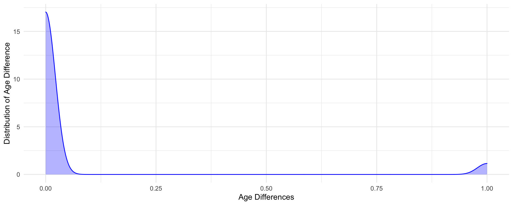
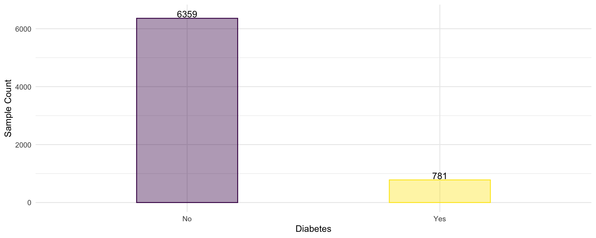
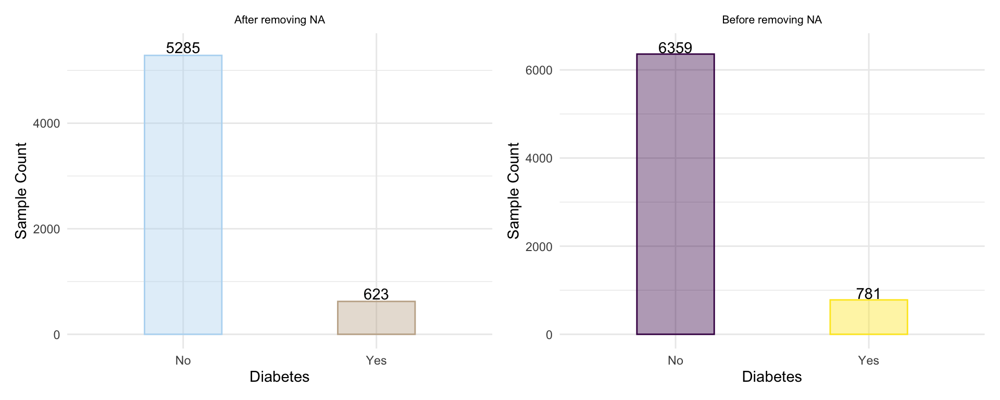

This section details the dataset generation steps that will ultimately be used for our predictive modeling purposes.
The goal of this project is to build a predictive modeling for diagnosis of diabetes using machine learning algorithms–LASSO and Random Forest–in the setting of imbalanced dataset. The predictors chosen are primarily from the rnhanesdata’s covariates dataset that span NHANES datasets from 2003-2004 and 2005-2006. Predictor variables will be commonly-found biological, environmental, and behavioral factors associated with diabetes. These variables are typically part of your routine physical exams with physicians, medical histories, demographics, as well as physical activity level. Some other potentially useful variables include household income, family poverty income ratio (PIR), and education level.
The issue of imbalanced datasets occur when there’s a difference in the frequency between two classes–in our case, diagnosis of diabetes. Since diagnosis involves a binary outcome (yes/no), it does make the imbalanced problem easier to manage. Nevertheless, this causes issue with machine learning algorithms as conventional metrics used to evaluate them become inaccurate. Several ways to mitigate this issue involves data-level approach which are considered “sub-sampling”. Therefore, we will apply these various sub-sampling methods and evaluate which method works best in properly predicting the diagnosis of diabetes.
Additionally, since conventional metrics will be inaccurate, we will obtain other kinds of metrics that are more sensitive to this imbalance and they are:
These metrics will be detailed later.
Disclaimer: Given the complexity of NHANES data and the relative inexperience of this analyst, the final model MUST NOT be applied or used to support real decision-making. This is primarily an exercise, to the best of this analyst’s abilities, to apply what has been learned with respect to using statistical techniques to build several predictive model and comparing their accuracy/efficiency in potentially classifying future data on their diabetic status.
The packages required will be specified on a as-needed basis to reduce confusion. For our data importing and cleaning, we will primarily utilize tidyverse. We will also use rnhanesdata to load already-cleaned data and some other functions to obtain additional covariates. Note that the rnhanesdata package only contains processed NHANES dataset from the years 2003-2004 and 2005-2006, named waves C and D respectively. As such, we will limit our analyses to these time period.
library(rnhanesdata) # source of primary dataset
library(tidyverse) # data-wrangling
library(patchwork) # helper package for graph arrangement
library(ghibli) # color palette package
library(haven) # to load XPT filesWe will load the activity data stored within the rnhanesdata package.
A helper function, clean_loader, was used to clean up the imported data using “standardized” name conventions as well as transforming variables to factors, where appropriate.
# helper function to load, clean, and turn into tibble
clean_loader <- function(datain) {as_tibble(datain) %>% janitor::clean_names()}
# load activity data; C = wave 2003-2004, D = wave 2005-2006.
actC <- clean_loader(PAXINTEN_C)
actD <- clean_loader(PAXINTEN_D)
# load flag data
flagC <- clean_loader(Flags_C)
flagD <- clean_loader(Flags_D)Both the activity (act*) and flag (flag*) datasets contains 5 critical variables along with a minute-by-minute measurement, from MIN1 - MIN1440. These variables are seqn, paxcal, paxstat, weekday, sddsrvyr.
The flag* dataset loaded along with the activity dataset provides a minute-by-minute indicator on whether or not the accelerometer device was worn (0 = not worn, 1 = worn). As such, we should convert all activity counts in the activity dataset to 0 when the flag indicator = 0.
# make activity = 0 if flag = 0 (non-wear indicator)
min_vars = paste0("min",1:1440)
actC[, min_vars] <- actC[, min_vars]*flagC[, min_vars]
actD[, min_vars] <- actD[, min_vars]*flagD[, min_vars]We will first load the already-processed covariate data from the rnhanesdata package.
# default covariates from rnhanesdata package
covC <- clean_loader(Covariate_C)
covD <- clean_loader(Covariate_D)rnhanesdata and directly from NHANESExamining codebook from NHANES, there are a few more variables that we are interested to obtain and we will use the process_covar() function provided in the rnhanesdata package to extract these variables. Additionally, we would like to obtain the HbA1c (a diagnostic test for diabetes) from NHANES directly since the package doesn’t seem to have this data.
# get additional covariates
# variables of interest were selected that are likely to be associated with diabetes
extra_covariates <- c(# Demographics: PIR, RIDEXPRG (1: yes, 2 no,
# 3: unsure, missing: not female/missing)
"INDFMPIR", "RIDEXPRG",
# Exam: HR, BP
"BPXPLS", "BPXSY1", "BPXSY2", "BPXSY3", "BPXSY4",
"BPXDI1","BPXDI2", "BPXDI3", "BPXDI4",
# Exam: weight, height, waist measures
"BMXWT","BMXHT", "BMXWAIST")
# obtain the covarites
extra_data <- process_covar(varnames = extra_covariates)
# isolate to wave C/D
extra_covC <- clean_loader(extra_data$Covariate_C)
extra_covD <- clean_loader(extra_data$Covariate_D)
rm(list = "extra_data")
# download hba1c data from 2003-2004 and 2005-2006
hba1c_C <- read_xpt("https://wwwn.cdc.gov/Nchs/Nhanes/2003-2004/L10_C.XPT") %>% janitor::clean_names()
hba1c_D <- read_xpt("https://wwwn.cdc.gov/Nchs/Nhanes/2005-2006/GHB_D.XPT") %>% janitor::clean_names()
# merge both years
hba1c <- bind_rows(hba1c_C, hba1c_D)
# combine both waves into a single dataframe as well as merge with hba1c data
all_extra_cov <- bind_rows(extra_covC, extra_covD) %>% left_join(hba1c, by = "seqn")
# remove original datasets/vectors/lists to clean environment
rm(list=c("extra_covC", "extra_covD", "extra_covariates", "hba1c", "hba1c_C", "hba1c_D"))Now that we have the activity, flag, and covariates data of interest, we shall combine them all. We will create an overall of 2 datasets; 1 containing activity and covariates, while another contains flags and covariates. This is done so that in the end, we can use the reweight_accel() and exclude_accel() functions from the rnhanesdata package.
# merge activity data with covariate data
actC_cov <- left_join(actC, covC, by = c("seqn", "sddsrvyr"))
actD_cov <- left_join(actD, covD, by = c("seqn", "sddsrvyr"))
# merge flag data with covariate data
flagC_cov <- left_join(flagC, covC, by = c("seqn", "sddsrvyr"))
flagD_cov <- left_join(flagD, covD, by = c("seqn", "sddsrvyr"))
# remove the "original" datasets
rm(list=c(paste0(c("act", "flag","cov"),rep(LETTERS[3:4],each=3))))
# merge both waves together
all_act <- bind_rows(actC_cov, actD_cov)
all_flag <- bind_rows(flagC_cov, flagD_cov)
rm(list=c(paste0(c("act", "flag"),rep(LETTERS[3:4],each=2),"_cov")))
# add the extra covariates into the new datasets
all_act <- left_join(all_act, all_extra_cov, by = "seqn")
all_flag <- left_join(all_flag, all_extra_cov, by = "seqn")
rm(list = "all_extra_cov")Some variables require conversion into factors.
We will take an average of blood pressure (BP) variables. Since most of our covariates are taken from rnhanesdata, they are mostly already set as factors. The only new ones we need to convert is ridexprg variables. Furthermore, we will collapse some levels within these factors using fct_collapse()
Also noted that the pregnancy variable, ridexprg, has almost >50% missing values. After further exploration, we found that most of these NA are coming from two sources:
Male genders. As such, we will impute these NAs with No.No.# # check levels of factor variables
# all_act %>% select_if(is.factor) %>% map(levels)
# helper function to factorize/make variables and/or recoding their factor levels
refactor_fn <- function(df) {
df %>%
# if male and NA or if female, age > 59, and NA, code as "no"
mutate(ridexprg = case_when((gender == "Male" & is.na(ridexprg)) |
(gender == "Female" & ridageyr > 59 & is.na(ridexprg))
~ 2,
TRUE ~ ridexprg)) %>%
mutate(across(c("ridexprg"), factor)) %>%
# changing the original codes and adding new variables
mutate(
# recode pregnancy indicator
ridexprg = fct_recode(ridexprg, "Yes" = "1", "No" = "2", "Uncertain" = "3"),
# obtain average across 4 measures BP systolic
bpxsy_avg = round(rowMeans(.[, c("bpxsy1", "bpxsy2", "bpxsy3", "bpxsy4")], na.rm = TRUE), 3),
# obtain average across 4 measures BP diastolic
bpxdi_avg = round(rowMeans(.[, c("bpxdi1", "bpxdi2", "bpxdi3", "bpxdi4")], na.rm = TRUE), 3),
# create new factor for indfmpir (poverty income ratio) per CDC's recommendation
pir_cat = factor(case_when(indfmpir < 1 ~ "Below poverty",
indfmpir >= 1 ~ "At or above poverty"))
) %>%
mutate(
# combining some factor levels into a single value
diabetes = fct_collapse(diabetes, "No" = c("No", "Borderline", "Refused", "Don't know")),
chf = fct_collapse(chf, "No" = c("No","Refused","Don't know")),
chd = fct_collapse(chd, "No" = c("No","Refused","Don't know")),
cancer = fct_collapse(cancer, "No" = c("No","Refused","Don't know")),
stroke = fct_collapse(stroke, "No" = c("No","Refused","Don't know")),
education_adult = fct_collapse(education_adult,
"Less than high school" = c("Less than 9th grade", "9-11th grade"),
"High school" = c("High school grad/GED or equivalent"),
"More than high school" = c("Some College or AA degree", "College graduate or above"),
NULL = c("Refused", "Don't know"))
)
}
all_act <- refactor_fn(all_act)
all_flag <- refactor_fn(all_flag)Now that we have all the covariates and data in a “single” dataset, we will remove ridagemn since this is age in months during screening and is likely to overlap with ridageyr, which was recommended by CDC to be used for analysis. We will compare ridageex against ridageyr to evaluate whether or not the difference between the two are large enough to warrant using one or the other.
# obtain a new, temp dataset to assess age at examination vs age at screening
age_compare <- all_act %>% select(ridageex, ridageyr) %>% mutate(
age_ex_yr = floor(ridageex/12),
age_diff = age_ex_yr - ridageyr
)
# plot the difference. majority seems to differ minimally, safe to remove ridageex.
age_compare %>% ggplot(aes(x = age_diff)) + geom_density(color = "blue", fill = "blue", alpha = 0.3) +
labs(x = "Age Differences", y = "Distribution of Age Difference")
Per the density graph above, majority of the difference are <0.25 years, with a mean of 0.06 and median of 0. We can likely keep using ridageyr and discard ridageex.
Additionally, since we obtained the bpx**_avg and pir_cat as well, the original measures can be dropped.
# bpx*** variables
bp_var <- paste0(c("bpxsy", "bpxdi"), rep(1:4, each = 2))
# remove now-unneeded variables
all_act <- select(all_act, -ridagemn, -ridageex, -all_of(bp_var), -indfmpir)
all_flag <- select(all_flag, -ridagemn, -ridageex, -all_of(bp_var), -indfmpir)
rm(list = "bp_var")We then re-arrange our column variables so that the minutes are at the end, to make it easier to evaluate our covariates.
# obtain the min* data and non-min* data
act_var <- which(colnames(all_act) %in% min_vars)
cov_var <- which(!(colnames(all_act) %in% min_vars))
# re-arrange
all_act <- all_act[, c(cov_var, act_var)]
all_flag <- all_flag[, c(cov_var, act_var)]
rm(list = c("act_var", "cov_var"))# using across() function to replace NA with 0 ONLY in the minute variables
# not shown, but the function has been checked and confirmed to only apply to the minute variables
# by checking the "total" NA difference between min variables in old vs. new as well as covariates.
all_act <- all_act %>% mutate(across(all_of(min_vars), ~ replace_na(.x, 0)))
all_flag <- all_flag %>% mutate(across(all_of(min_vars), ~ replace_na(.x, 0)))We will be creating daily activity summary measures such as total daily physical activity counts (tdac), the daily sum of log of the physical activity (tdlac). The log is a transformation to the data given the skew noted in the activity-count data, which hopefully will make our distribution more normalized.
Additionally, we also obtained the daily sedentary time (sedtime) as well as moderate-to-vigorous-intensity-actvity (MVIA) time (mviatime). Thresholds were referenced from Dr. Schuna’s article, specifying that sedentary time is typically \(<\) 100 cpm (“counts per minute”) while MVIA is typically \(\geq\) 2020 cpm.
# For faster processing, isolate minute variables into a separate matrix
act_matrix <- all_act[,min_vars]
act_matrix <- as.matrix(act_matrix)
# obtain summary variables
all_act$tdac <- all_flag$tdac <- rowSums(act_matrix)
all_act$tdlac <- all_flag$tdlac <- rowSums(log(1 + act_matrix))
all_act$sedtime <- all_flag$sedtime <- rowSums(act_matrix < 100)
all_act$mviatime <- all_flag$mviatime <- rowSums(act_matrix >= 2020)
# remove matrix
rm(list = "act_matrix")While we are aiming to create a predictive model, we should also provide some criteria in order to clean-up our dataset even further.
We will restrict our data to:
ridexprg = no). Further, since we filtered using pregnancy for a single level, we can then remove the variable.# applying exclusion criteria
all_act <- all_act %>% filter(ridageyr >= 20, ridexprg == "No") %>% select(-ridexprg)
all_flag <- all_flag %>% filter(ridageyr >= 20, ridexprg == "No") %>% select(-ridexprg)The function exclude_accel from the rnhanesdata package returns the indices of daily activities which were identified as “good”. The criteria to determine this was to have at least 10 hours (600 minutes) of wear time. Additionally, the function filters for datapoints which were deemed questionable by NHANES. This function returns a numeric vector containing the indices of days which were identified as “good”. These indices can be used to subset the accelerometry data as desired. An illustration is provided in the examples.
# creating indices for datapoints to keep
# need this to obtain "good" activity data
keep_act <- exclude_accel(all_act %>% rename_with(str_to_upper), all_flag %>% rename_with(str_to_upper))
# subset data to only contain those weekdays deemed "good"
filt_all_act <- all_act[keep_act, ]
rm(list = c("keep_act", "all_act", "all_flag"))
# summarize the daily activity counts
filt_all_act <- filt_all_act %>% group_by(seqn) %>%
mutate(
mean_tdac = mean(tdac, na.rm = T),
mean_tdlac = mean(tdlac, na.rm = T),
mean_sedtime = mean(sedtime, na.rm = T),
mean_mviatime = mean(mviatime, na.rm = T)
) %>%
ungroup()
# create vector of variables now-unneeded for analysis (minute-by-minute counts, daily counts,
# daily log of counts, daily sedentary counts and moderate to vigorous activity counts)
reweight_noinclude <- c(min_vars, "tdac", "tdlac", "sedtime", "mviatime")
# remove all the now-unneeded variables as well as condensing our data, now that we do not need the daily measures.
data_df <- filt_all_act %>% select(-all_of(reweight_noinclude)) %>% distinct(seqn, .keep_all = T)
rm(list = "filt_all_act")Now that we have a relatively clean dataset, we proceed to evaluate the missingness in our dataset.
For our model building, we are primarily interested in predicting diabetic status. We first check the distribution:
all_barplot <- data_df %>% count(diabetes) %>%
ggplot(aes(x = diabetes, y = n)) +
geom_bar(aes(color = diabetes, fill = diabetes), stat = "identity", alpha = 0.4, width = 0.4) +
geom_text(aes(label = n), show.legend = F, nudge_y = 150, color = "black") +
labs(x = "Diabetes", y = "Sample Count") +
theme(legend.position = "none")
all_barplot
As we see in our simple bar graph above, our dataset is highly imbalanced. Imbalanced data are known to cause issues for machine learning, particularly if we use accuracy as our metric [ref]. As such, we should explore potential ways to address this. Firstly, accuracy metric will likely work poorly in this given dataset and thus we should use ROC-AUC and PR-AUC as our metric, in addition to other metrics such as precision, recall [ref].
Furthermore, in addition to LASSO and Random Forest, we will also consider several algorithms that are typically robust to imbalanced classes. These are:
Additionally, we will also consider some resampling methods to improve upon our algorithms, such as up-/down- sampling, SMOTE, or ROSE.
data_df <- data_df %>%
rowwise(seqn) %>%
mutate(
na_sum = sum(is.na(cur_data())),
na_any = ifelse(na_sum > 0, TRUE, FALSE)
) %>%
ungroup()
data_df %>% count(na_any)## # A tibble: 2 x 2
## na_any n
## <lgl> <int>
## 1 FALSE 5908
## 2 TRUE 1232As seen above, there’s 1086 rows that contains at least one NA. This means that only 82.75% of our data is complete. Additionally, we note that there is a single person that has 10 variables missing–the maximum amount of missing variables in a given person.
If we subset only to these complete data and check the distribution:
complete_barplot <- data_df %>% drop_na() %>% count(diabetes) %>%
ggplot(aes(x = diabetes, y = n)) +
geom_bar(aes(color = diabetes, fill = diabetes), stat = "identity", alpha = 0.4, width = 0.4) +
geom_text(aes(label = n), show.legend = F, nudge_y = 150, color = "black") +
labs(x = "Diabetes", y = "Sample Count", subtitle = "After removing NA") +
theme(legend.position = "none") +
scale_colour_ghibli_d("SpiritedMedium", direction = -1) +
scale_fill_ghibli_d("SpiritedMedium", direction = -1)
complete_barplot | all_barplot + labs(subtitle = "Before removing NA")
Per our graph comparison, though our dataset is indeed smaller, the resulting distribution is largely unchanged. As such, we believe that it is alright to remove the NA-containing respondents.
# subset to complete dataset only
nhanes_df <- data_df %>% drop_na()
# remove extra objects
rm(list = c("all_barplot", "complete_barplot"))We also want to re-calculate our weights given that we’ve merged the years 2003-2004 and 2005-2006 as well as applying exclusion criteria. We will
# obtaining a 4-year weight post-aggregating the dataframes, inclusion/exclusion, etc
data_df <- data_df %>% rename_with(str_to_upper) %>% reweight_accel() %>% select(-matches("2yr|unadj"), -ends_with("4yr_adj")) %>% janitor::clean_names()
nhanes_df <- nhanes_df %>% rename_with(str_to_upper) %>% reweight_accel() %>% select(-matches("2yr|unadj"), -ends_with("4yr_adj")) %>% janitor::clean_names()
# remove reweight_df
rm(list = c("reweight_noinclude", "min_vars"))# # create RData from the final dataset
# save(data_df, file = "../NHANES pt2/Dataset/data.rda")
# save(nhanes_df, file = "../NHANES pt2/Dataset/nhanes_data.rda")A work by Kevin S.W.